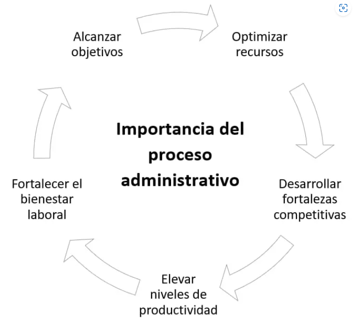

Importancia del Proceso Administrativo
- Facilitar la coordinación de decisiones más asertivas.
- Resaltar los objetivos organizacionales.
- Determina anticipadamente qué recursos se van a necesitar para que la entidad opere correctamente.
- Diseñar métodos y procedimientos de operación.
- Mejorar los sistemas de trabajo evitando operaciones inútiles.
- Reducir al mínimo o eliminar el trabajo no productivo.
- la comunicación a todos los niveles horizontal y verticalmente.
- Seleccionar, orientar, capacitar y desarrollar al personal calificado para cada puesto.
